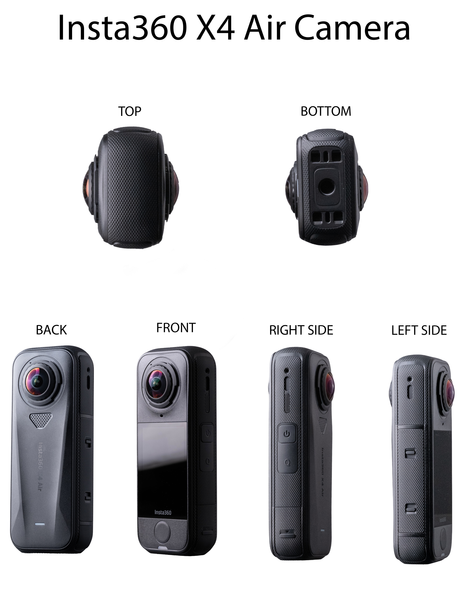
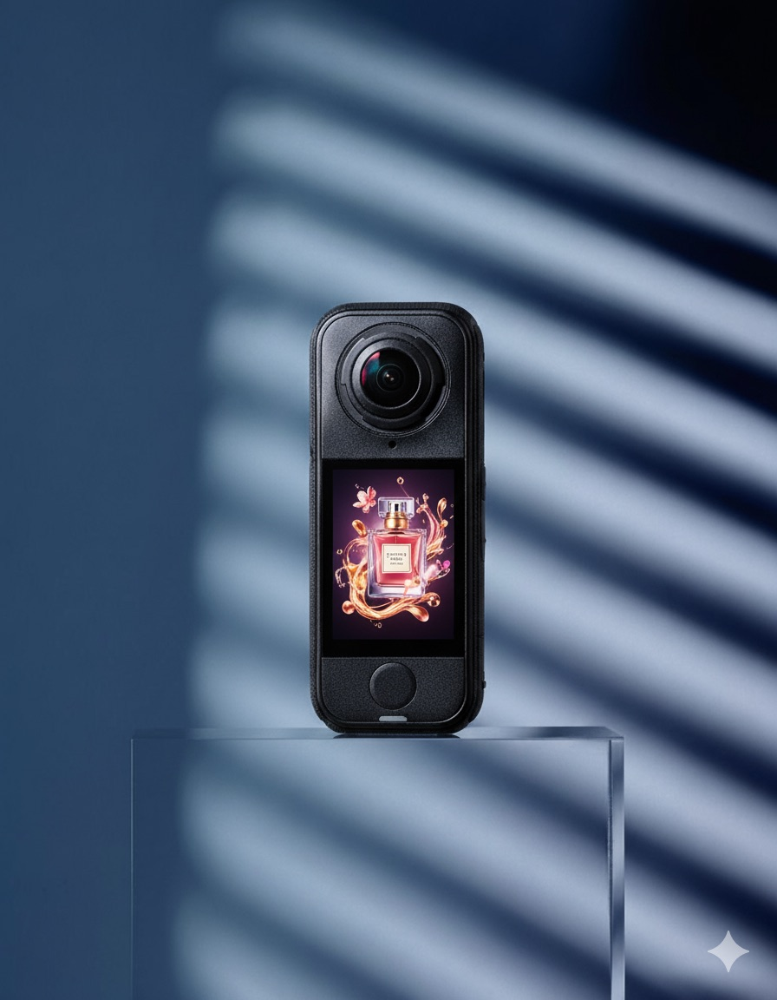
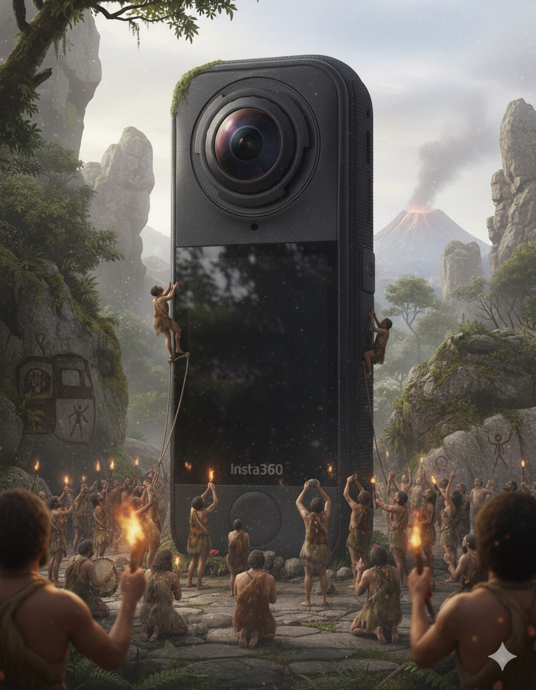
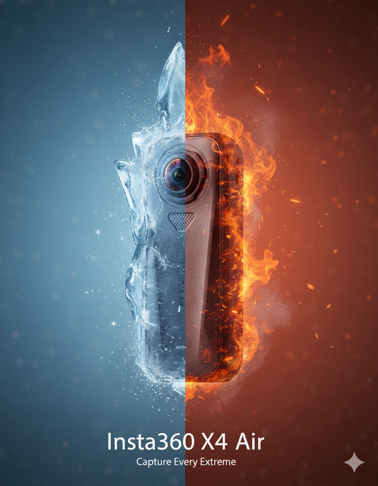
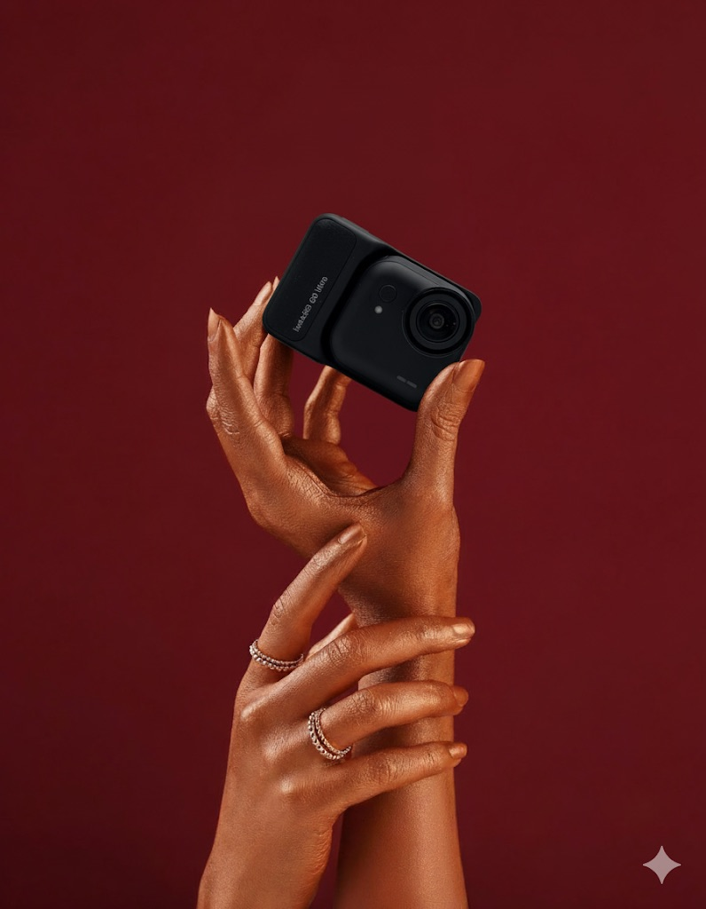
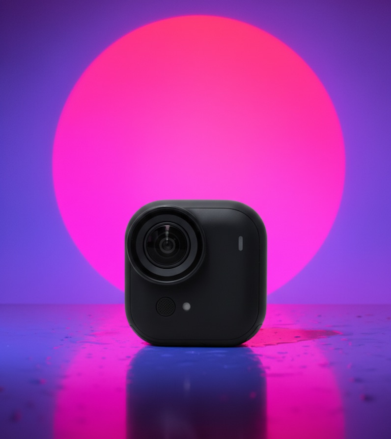
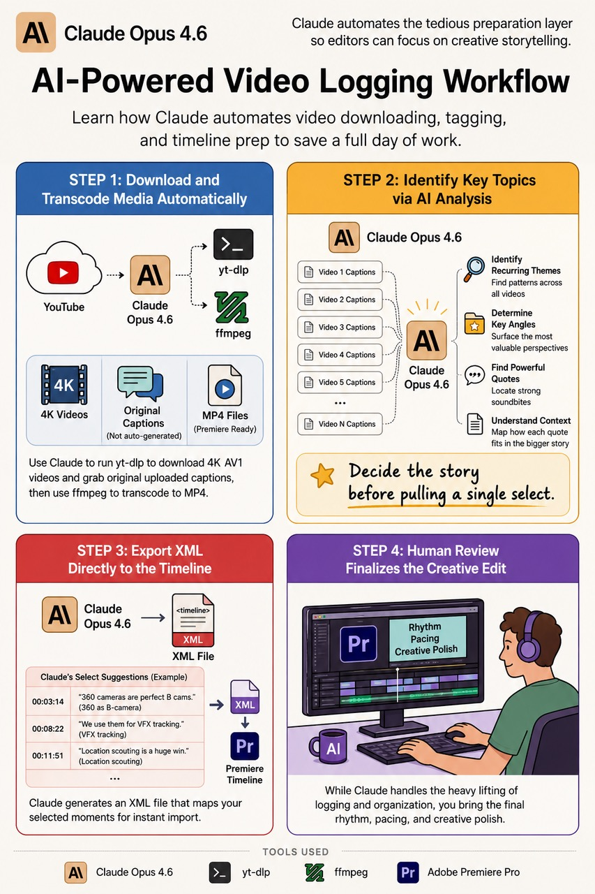
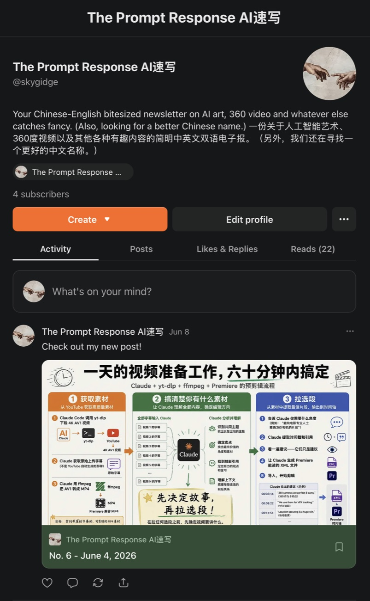
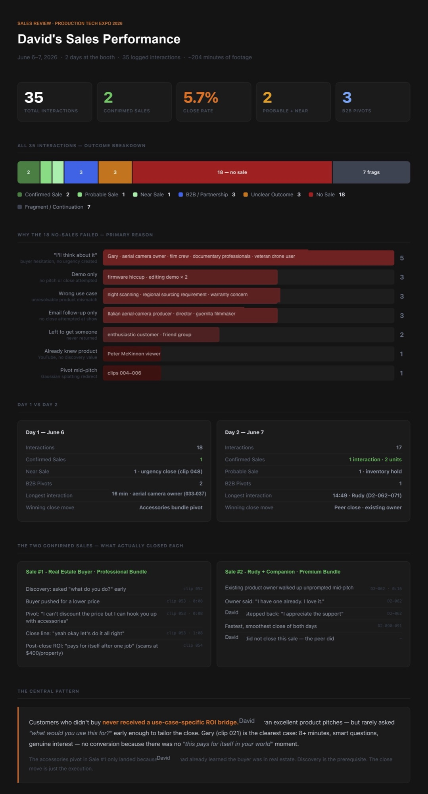

AI tools
Eight projects so far. Two run on their own — I check on them like houseplants. The rule is simple: Claude's a collaborator, not the last word.
Everything it suggests gets traced back to the source before it ships. Some of it holds up, some doesn't — knowing the difference is most of the job. None of these are demos; each one earns its place by removing real work.
Insta360 Creator Story Finder
An autonomous weekly agent that finds undiscovered Insta360 creators before they go mainstream. Verified sources, checked against an exclusion list, published to a live page. No manual intervention.
Sky's Pre-Post
Built for the team managing influencer partnerships: it reviews creator videos faster, checks they meet FTC disclosure rules when the creator is paid, confirms the brand logo appears, and measures the video's tone. A proof of concept — and it worked.
AI Product Photography
As AI image models have improved, product photography has gotten dramatically easier. I built a makeshift studio in our office, shot every side of each camera, laid the angles out on one sheet, and fed that to the model alongside commercials whose look I wanted to borrow. For a 360 camera we're not quite there yet — but we're very, very close.









Video Selects: Claude in the Edit Bay
Claude reviewed transcripts and shot logs to pull selects from raw footage — reducing a full day of manual logging to about an hour. The edit was assembled in Premiere and screened at Cinegear.

Prompt Response AI速写
A bilingual AI newsletter for Insta360's Shenzhen creative studio. I build each issue after work — testing prompts, seeing what actually holds up for me, and working out how the studio could use it. It's real time: at least a full workday's worth of effort spread across a week per issue.

Prompt Response Story Finder
Scans incoming newsletters, scores stories, writes bilingual EN/中文 summaries of the best ones, and pushes results to GitHub. It doesn't replace sourcing — it surfaces maybe half my leads, and I still dig out the rest myself — but it's a real head start.
Shenzhen True-Crime EPUB Generator
Turns Chinese-language long-reads into bilingual Kindle EPUBs — fetched, translated with full cultural context, sources kept, assembled side-by-side. Built so a backlog of Shenzhen crime, history, and urban-village journalism is finally readable in English.
Sales Analysis: David
One of our best salesmen, David, was mic'd during a full trade-show day for an instructional video. On a lark, I asked Claude to transcribe the hours of footage and see if it could pull sales data from it. Surprisingly, it worked. And accurately. Claude turned what David did and said on the floor into a data-driven snapshot of his performance. The sales count came out correct and David found the results insightful. Apple is rumored to be working on a pendant that would record audio to do something similar. Simple and effective.

The rule
Claude is a collaborator, not the last word. Every assumption gets traced back to the source before it's actioned — if the logic doesn't hold up in the material, the suggestion doesn't move forward.